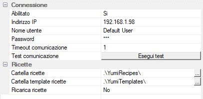

Da qui è possibile modificare i parametri di connessione al robot e la posizione dell’archivio ricette. Tutti i valori, a parte l’indirizzo IP per la connessione, sono già inizializzati ai valori di default.
Abilitato: abilita o disabilita l’interfaccia di comunicazione con Yumi. Può essere utilizzato per disabilitare temporaneamente la comunicazione con il robot in caso di guasto o non utilizzo, allo scopo di evitare la segnalazione di errori di comunicazione ad ogni avvio del programma
Indirizzo IP: indirizzo IP del controller del robot
Nome utente: nome utente da utilizzare per la connessione al robot. Il nome utente di default è Default User
Password: password da utilizzare per la connessione al robot. La password di default è robotics
Timeout comunicazione: tempo in secondi oltre il quale vengono interrotti i tentativi di comunicazione con il robot
Test comunicazione: effettua un test di comunicazione ritornando l’esito dell’operazione
Cartella ricette: percorso alla cartella nella quale vengono ricercate le ricette da visualizzare nell’archivio. Può essere un percorso assoluto o relativo alla cartella di installazione di Skipper. La posizione predefinita della cartella è .\YumiRecipes, posta all’interno della cartella di installazione di Skipper
Cartella template ricette: percorso alla cartella nella quale vengono ricercate le ricette da visualizzare nell’elenco dei template. Può essere un percorso assoluto o relativo alla cartella di installazione di Skipper. La posizione predefinita della cartella è .\YumiTemplates, posta all’interno della cartella di installazione di Skipper
Ricarica ricette: opzione che viene utilizzata durante il caricamento automatico delle ricette da file cnc. Qualora la ricetta da caricare sia già presente nel robot, specifica se questa debba essere ricaricata, con conseguente riavvio del ciclo, oppure no